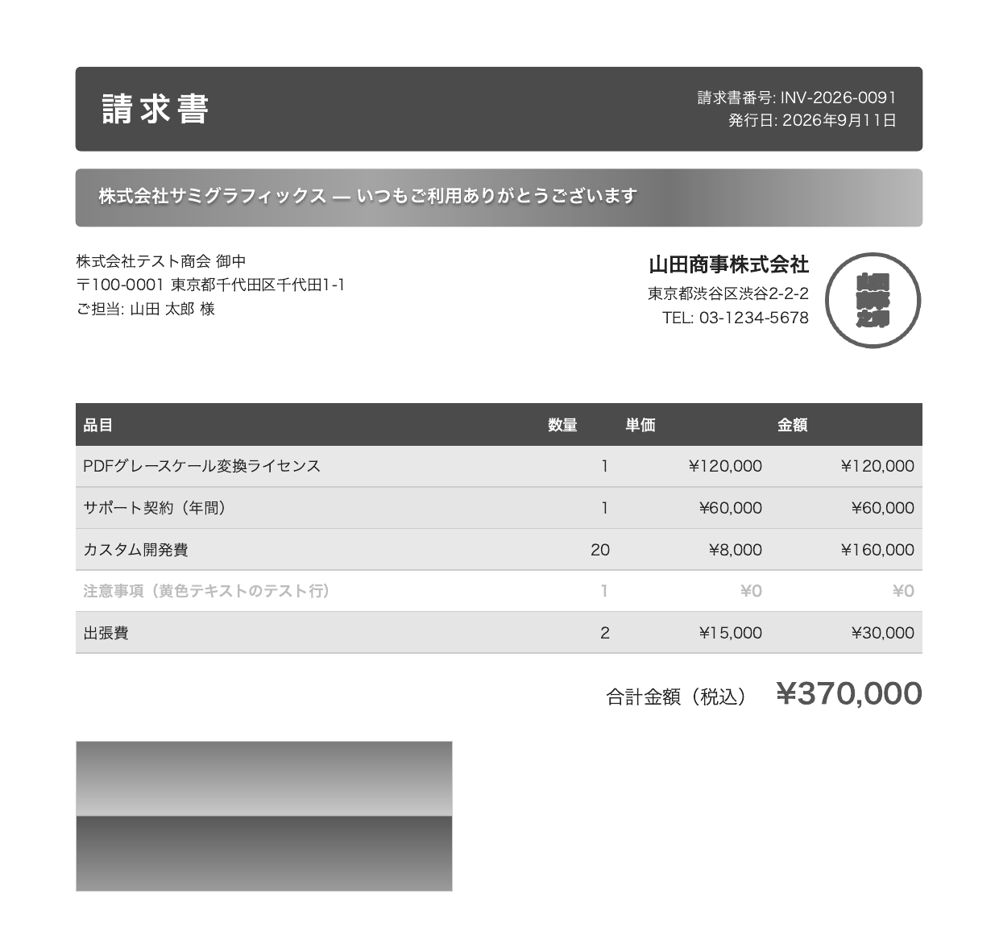
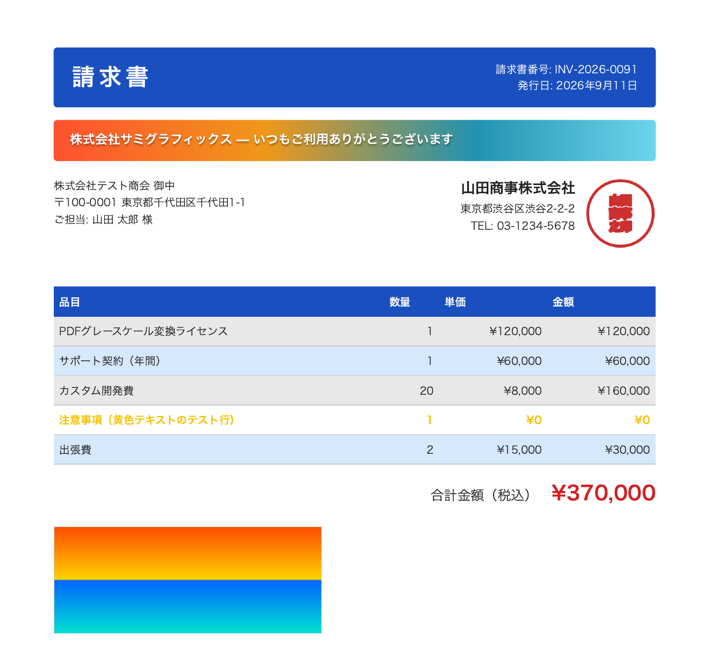
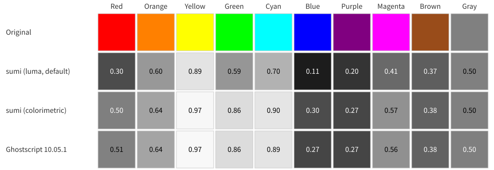

Color PDFsto black and white.Text stays text.
sumi is a command that turns a PDF into grayscale or black and white by rewriting only its color operators. Pages are never turned into images, so searchable and copyable text and thin rules all stay intact.
- A standalone command with no Ghostscript dependency. MIT licensed
- Prebuilt binaries for macOS, Windows and Linux
- Call it as an external command from Rails and other apps


No rasterizing: only the color operators change
A PDF page is a sequence of operators such as “fill with this color”, “draw a line here” and “show this text”. sumi finds only the operators that set colors, replaces them with gray, and copies every other byte as it is.
Colors inside images, gradients, annotations and forms are converted the same way.
Before
q
3.125 0 0 3.125 0 0 cm
.102 .3098 .749 RG .102 .3098 .749 rg
/G3 gs
60 116 m
60 57 l
…
729 53 l
733 116 l
h
f
QAfter
q
3.125 0 0 3.125 0 0 cm
0.2958 G 0.2958 g
/G3 gs
60 116 m
60 57 l
…
729 53 l
733 116 l
h
f
QThe part of the invoice above that draws the blue heading band. Only the color operators changed; the path operators are untouched.
gray = 0.30 × red + 0.59 × green + 0.11 × blue
| Original color | RGB | Grayscale | Monochrome (threshold 0.5) |
|---|---|---|---|
| Heading blue | .102 .310 .749 | 0.30 | 0 |
| Red | 1 0 0 | 0.30 | 0 |
| Green | 0 1 0 | 0.59 | 1 |
| Yellow | 1 1 0 | 0.89 | 1 |
This is the conversion formula given by the PDF specification. Light colors such as yellow become white in monochrome. With --gray-model colorimetric, sumi instead reads colors as sRGB and uses their luminance, which makes primary colors lighter (red 0.50, green 0.86, blue 0.30), close to Ghostscript’s default conversion.
Representative colors compared with Ghostscript

--gray-model colorimetric gives nearly the same shades as Ghostscript’s default conversion; the largest difference is 0.03, for blue. The default luma makes red, green, blue, cyan and magenta 0.15 to 0.28 darker than Ghostscript. Measured with sumi 0.2.0 and Ghostscript 10.05.1.Compared with Ghostscript and mutool
We compared the time and memory needed to convert the same PDFs to grayscale with Ghostscript and with MuPDF’s mutool recolor. Each figure is the median of 10 runs as a command. The buttons above each chart switch between the two machines we measured on, and each PDF name links to the file we used.
Like sumi, mutool recolor rewrites only the color operators without rasterizing pages. Since it does not redraw the document the way Ghostscript does, the gap to sumi is smaller. Note that MuPDF, like Ghostscript, is made by Artifex and licensed under the AGPL-3.0 (or a commercial license).
Run time
Bars are scaled to the slowest tool for each PDF. The number on the right is how many times faster sumi was, compared with the closer of the two other tools.
-
Invoice2 pages, made with Chrome
sumi 21 ms, mutool 182 ms, Ghostscript 153 ms. sumi was faster than Ghostscript by 7.2×vs Ghostscript
-
Invoice50 pages, made with Chrome
sumi 64 ms, mutool 2,071 ms, Ghostscript 2,553 ms. sumi was faster than mutool by 32.5×vs mutool
-
Infographic1 page, Adobe PDF Library
sumi 33 ms, mutool 56 ms, Ghostscript 176 ms. sumi was faster than mutool by 1.7×vs mutool
-
NASA fact sheet2 pages, with photos
sumi 56 ms, mutool 97 ms, Ghostscript 808 ms. sumi was faster than mutool by 1.8×vs mutool
-
Poster1 page, 5.9 MB
sumi 532 ms, mutool 906 ms, Ghostscript 1,235 ms. sumi was faster than mutool by 1.7×vs mutool
-
Map1 page, 6.7 MB
sumi 1,373 ms, mutool 1,925 ms, Ghostscript 3,249 ms. sumi was faster than mutool by 1.4×vs mutool
-
Invoice2 pages, made with Chrome
sumi 21 ms, mutool 194 ms, Ghostscript 150 ms. sumi was faster than Ghostscript by 7.2×vs Ghostscript
-
Invoice50 pages, made with Chrome
sumi 62 ms, mutool 2,285 ms, Ghostscript 2,574 ms. sumi was faster than mutool by 36.6×vs mutool
-
Infographic1 page, Adobe PDF Library
sumi 36 ms, mutool 57 ms, Ghostscript 154 ms. sumi was faster than mutool by 1.6×vs mutool
-
NASA fact sheet2 pages, with photos
sumi 59 ms, mutool 92 ms, Ghostscript 621 ms. sumi was faster than mutool by 1.6×vs mutool
-
Poster1 page, 5.9 MB
sumi 596 ms, mutool 886 ms, Ghostscript 1,192 ms. sumi was faster than mutool by 1.5×vs mutool
-
Map1 page, 6.7 MB
sumi 1,585 ms, mutool 1,914 ms, Ghostscript 3,320 ms. sumi was faster than mutool by 1.2×vs mutool
Memory usage
Peak resident memory of the process. Bars are scaled to the tool that used the most for each PDF. The number on the right is sumi’s memory as a percentage of the other tool that used the least.
-
Invoice2 pages, 0.34 MB
sumi 10.2 MB, mutool 29.6 MB, Ghostscript 30.9 MB. sumi’s memory as a share of mutool’s: 34%of mutool
-
Invoice50 pages, 1.0 MB
sumi 20.9 MB, mutool 441.0 MB, Ghostscript 86.5 MB. sumi’s memory as a share of Ghostscript’s: 24%of Ghostscript
-
Infographic1 page, 0.30 MB
sumi 6.2 MB, mutool 7.1 MB, Ghostscript 28.0 MB. sumi’s memory as a share of mutool’s: 87%of mutool
-
NASA fact sheet2 pages, 0.30 MB
sumi 9.0 MB, mutool 17.5 MB, Ghostscript 43.2 MB. sumi’s memory as a share of mutool’s: 52%of mutool
-
Poster1 page, 5.9 MB
sumi 34.6 MB, mutool 54.2 MB, Ghostscript 38.5 MB. sumi’s memory as a share of Ghostscript’s: 90%of Ghostscript
-
Map1 page, 6.7 MB
sumi 87.5 MB, mutool 69.4 MB, Ghostscript 36.1 MB. sumi’s memory as a share of Ghostscript’s: 242%of Ghostscript
-
Invoice2 pages, 0.34 MB
sumi 10.5 MB, mutool 44.6 MB, Ghostscript 31.6 MB. sumi’s memory as a share of Ghostscript’s: 33%of Ghostscript
-
Invoice50 pages, 1.0 MB
sumi 20.2 MB, mutool 462.5 MB, Ghostscript 78.8 MB. sumi’s memory as a share of Ghostscript’s: 26%of Ghostscript
-
Infographic1 page, 0.30 MB
sumi 6.8 MB, mutool 21.3 MB, Ghostscript 29.0 MB. sumi’s memory as a share of mutool’s: 32%of mutool
-
NASA fact sheet2 pages, 0.30 MB
sumi 8.6 MB, mutool 31.1 MB, Ghostscript 35.4 MB. sumi’s memory as a share of mutool’s: 28%of mutool
-
Poster1 page, 5.9 MB
sumi 30.8 MB, mutool 63.1 MB, Ghostscript 36.6 MB. sumi’s memory as a share of Ghostscript’s: 84%of Ghostscript
-
Map1 page, 6.7 MB
sumi 72.7 MB, mutool 87.8 MB, Ghostscript 32.8 MB. sumi’s memory as a share of Ghostscript’s: 222%of Ghostscript
- The more pages, the wider the gapGhostscript interprets and redraws the PDF, while sumi only rewrites the color operators. On the 50-page invoice, sumi was 40.1× (Mac) and 41.2× (Linux) faster than Ghostscript, and 32.5× (Mac) and 36.6× (Linux) faster than mutool.
- Against mutool, page count makes the differencemutool also rewrites color operators, so on one-page PDFs the gap is 1.2–1.7×. Going from a 2-page to a 50-page invoice, however, took mutool from 194 ms to 2,285 ms (11.8×) and sumi from 21 ms to 62 ms (3.0×) on Linux. Memory went from 44.6 MB to 462.5 MB for mutool and from 10.5 MB to 20.2 MB for sumi. The Mac shows the same trend, with mutool going from 29.6 MB to 441.0 MB.
- On large PDFs, sumi can use more memorysumi loads the whole PDF into memory, so larger files need more. For the 6.7 MB map it used 2.4× (Mac) and 2.2× (Linux) as much as Ghostscript. It used less than mutool on all 6 PDFs on Linux and on 5 of 6 on the Mac.
- Text extracts exactly as beforeText extracted from sumi’s output matched the original PDF for all 6 files on both machines, as it did for mutool. In Ghostscript’s output, the invoice’s “issue date” label (発行日) no longer came out as one string, so it could not be found by search.
- Photo-heavy PDFs come out smaller with Ghostscriptsumi and mutool store JPEG images again with lossless compression. The NASA fact sheet came out at 0.84 MB with sumi, 0.83–0.84 MB with mutool, and 0.51 MB (Mac) and 0.24 MB (Linux) with Ghostscript.
How we measured
We compared sumi 0.1.0 with Ghostscript and mutool on two machines. The Mac is an Apple M1 Pro (16 GB of memory) running macOS 26.5.2, Ghostscript 10.05.1 and mutool 1.28.3, re-measured with mutool added on September 13, 2026. The Linux machine is an AMD Ryzen 7 6800H (GEEKOM A6, 32 GB of memory) running Omarchy 4.0.1 (based on Arch Linux), Ghostscript 10.07.1 and mutool 1.28.0, measured on September 12, 2026. Every tool was run as a command, including process startup, with one warm-up run and then 10 runs per PDF. Time and memory (peak resident memory) come from /usr/bin/time.
sumi input.pdf -o output.pdf --overwrite
gs -q -dNOPAUSE -dBATCH -dSAFER -sDEVICE=pdfwrite \
-sColorConversionStrategy=Gray -dProcessColorModel=/DeviceGray \
-o output.pdf input.pdf
mutool recolor -c gray -o output.pdf input.pdfWe rendered each converted PDF with poppler to check that no color remained, and compared the text extracted with pdftotext against the original. Neither Ghostscript nor mutool recolor can produce black-and-white output while keeping vectors, so only grayscale conversion was compared. The same input PDFs were used on the Mac and on Linux, but the numbers depend on the environment.
The sources of the input PDFs and the scripts to reproduce the measurements are in the README and in bench/.
What gets converted, and what stays
sumi converts everything commonly found in invoices and other business documents. Anything it cannot convert keeps its original color and triggers a warning. With --strict, sumi exits with an error instead.
Converted
- Text and shape colorsRGB, CMYK, gray, ICC-based colors and spot colors
- ImagesPNG-style images, palette images, JPEG, and images embedded directly in the page
- GradientsAxial, radial and function-based
- Reusable drawingsForm XObjects, patterns and Type 3 fonts
- Annotations and form fieldsAppearance streams, border and background colors, and field text colors
Left as is
- Encrypted PDFssumi exits with an error without converting
- JPEG 2000 and JBIG2 color imagesKept in their original colors, with a warning
- Mesh gradients with a color per vertexKept in their original colors, with a warning
- CMYK tonesA simple formula is used, so colors such as cyan come out lighter than in a color-managed view
See Limitations in the README for details.
Install
Pick your platform and run the commands. The files are also available from GitHub Releases.
curl -L https://github.com/champierre/sumi/releases/latest/download/sumi-aarch64-apple-darwin.tar.gz | tar xz
sudo mkdir -p /usr/local/bin
sudo mv sumi-aarch64-apple-darwin/sumi /usr/local/bin/
sumi --versioncurl -L https://github.com/champierre/sumi/releases/latest/download/sumi-x86_64-apple-darwin.tar.gz | tar xz
sudo mkdir -p /usr/local/bin
sudo mv sumi-x86_64-apple-darwin/sumi /usr/local/bin/
sumi --versionInvoke-WebRequest -Uri https://github.com/champierre/sumi/releases/latest/download/sumi-x86_64-pc-windows-msvc.zip -OutFile sumi.zip
Expand-Archive sumi.zip -DestinationPath .
.\sumi-x86_64-pc-windows-msvc\sumi.exe --versionRun these in PowerShell. Move sumi.exe to a folder on your PATH to run sumi from anywhere.
curl -L https://github.com/champierre/sumi/releases/latest/download/sumi-x86_64-unknown-linux-musl.tar.gz | tar xz
sudo mv sumi-x86_64-unknown-linux-musl/sumi /usr/local/bin/
sumi --versionThe binary is statically linked, so it runs on any distribution.
curl -L https://github.com/champierre/sumi/releases/latest/download/sumi-aarch64-unknown-linux-musl.tar.gz | tar xz
sudo mv sumi-aarch64-unknown-linux-musl/sumi /usr/local/bin/
sumi --versionThe binary is statically linked, so it runs on any distribution.
With a Rust toolchain, you can also install from source.
cargo install --git https://github.com/champierre/sumi sumi-cliIn a Ruby application, add the gem that bundles the prebuilt CLI to your Gemfile. Development and production then run the same version.
gem "sumi-ruby"Usage
Give it an input file and an output path, and it converts to grayscale.
If the output file already exists, sumi exits without overwriting it. A failed conversion never leaves a partly written file behind.
Run sumi --help for the list of options and exit codes.
Command line
# Grayscale
sumi invoice.pdf -o invoice-gray.pdf
# Black and white (change the threshold with --threshold)
sumi invoice.pdf -o invoice-mono.pdf --mode monochrome
# Convert RGB to gray with brightness close to Ghostscript
sumi invoice.pdf -o invoice-gray.pdf --gray-model colorimetric
# Overwrite an existing file
sumi invoice.pdf -o invoice-gray.pdf --overwrite
# Convert through standard input and output
cat invoice.pdf | sumi - -o - > invoice-gray.pdf
# Print the result (page count, warnings) as JSON on standard error
sumi invoice.pdf -o invoice-gray.pdf --report jsonCalling it from Rails
require "open3"
require "sumi/ruby" # gem "sumi-ruby"
_stdout, stderr, status = Open3.capture3(
Sumi::Ruby.executable, input_path.to_s, "-o", output_path.to_s,
"--overwrite", "--timeout", "30"
)
raise "sumi failed: #{stderr}" unless status.success?